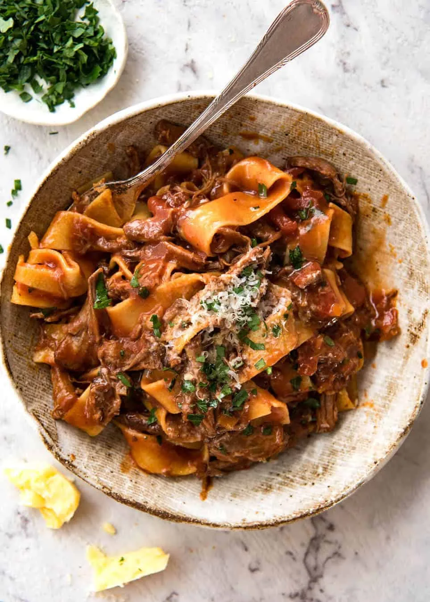

3 amazing recipes
Lasagna Recipe
Home

Popular lasagna recipe, not the italian to my
knowledge but seems to be a good one
Ingredients
- Meat: This super meaty lasagna has sweet Italian sausage and lean ground beef.
- Onion and garlic: An onion and two cloves of garlic are cooked with the meat to add tons of flavor.
- products: You'll need a can of crushed tomatoes, two cans of tomato sauce, and two cans of tomato paste.
- Sugar: Two tablespoons of white sugar add subtle sweetness and enhance the flavor of the sauce.
- Spices and seasonings: This lasagna recipe is flavored with fresh parsley, dried basil leaves, salt, Italian seasoning, fennel seeds, and black pepper.
- Lasagna noodles: Use store-bought or homemade lasagna noodles.
- Cheeses: Parmesan, mozzarella, and ricotta cheese make this lasagna extra decadent.
- Egg: An egg helps bind the ricotta so it doesn't ooze out of the lasagna when you cut into it.
Steps
- Make the meat sauce.
- Cook the noodles.
- Make the ricotta mixture.
- Layer the lasagna according to the recipe instructions.
- Cover with foil and bake.
- Let the lasagna rest before serving.
Gourmet Mushroom Risotto
Home

Seems to be a pretty decent rissoto, have white wine!
Ingredients
- 6 cups chicken broth, or as needed
- 3 tablespoons olive oil, divided
- 1 pound portobello mushrooms, thinly sliced
- 2 medium shallots, diced
- 3 tablespoons olive oil, divided
- 1 ½ cups Arborio rice
- ½ cup dry white wine
- 4 tablespoons butter
- 3 tablespoons finely chopped chives
- ⅓ cup freshly grated Parmesan cheese
- sea salt and freshly ground black pepper to taste
Steps
- Warm broth in a saucepan over low heat. Meanwhile, warm 2 tablespoons olive oil in a large saucepan over medium-high heat. Add portobello and white mushrooms; cook and stir until soft, about 3 minutes. Remove mushrooms and their liquid to a bowl; set aside.
- Add remaining 1 tablespoon olive oil to the saucepan. Stir in shallots and cook for 1 minute. Add rice; cook and stir until rice is coated with oil and pale, golden in color, about 2 minutes.
- Pour in wine, stirring constantly until wine is fully absorbed. Add 1/2 cup warm broth to the rice, and stir until the broth is absorbed.
- Continue adding broth, 1/2 cup at a time, stirring constantly, until the liquid is absorbed and the rice is tender, yet firm to the bite, about 15 to 20 minutes.
- Remove from heat. Stir in reserved mushrooms and their liquid, butter, chives, and Parmesan cheese.
- Season with salt and pepper and serve immediately.
Ragu with spaghetti
Home

Pasta ragu, classic italian with a spinoff on how the meat is cooked
Steps
- 1.2kg / 2.5 lb chuck beef
- 1 tbsp salt
- Black pepper
- 3 tbsp olive oil
- 3 cloves garlic , minced
- 1 onion , diced
- 1 cup carrots , diced (Note 2)
- 1 cup celery , diced (Note 2)
- 800g / 28oz crushed canned tomatoes
- 3 tbsp tomato paste
- 2 beef bouillon cubes , crumbled (Note 3)
- 1 cup / 250ml red wine , full bodied (like merlot, cabernet sauvignon), or sub with beef broth/stock
- 1 1/2 cups / 375 ml water (Note 3)
- 3/4 tsp dried thyme or 3 sprigs fresh thyme
- 3 dried bay leaves
Ingredients
- Pat beef dry and sprinkle with salt and pepper
- Sear Beef: Heat 1 tbsp olive oil over high heat in a heavy based pot. Add beef and sear each piece aggressively on all sides until very browned (3 - 5 minutes in total), then remove onto a plate.
- Turn stove down to medium low and add remaining 2 tbsp of olive oil.
- Soffrito: Add garlic and onion and sauté for 2 minutes. Then add the carrots and celery and sauté slowly for 5 minutes.
- Add remaining Ragu ingredients and return the beef to the pot (including pooled juices). Turn the stove up and bring it to a simmer, then turn it down to low so it's bubbling very very gently. (Note 7)
- Slow cook: Cover the pot and let it cook for 2 hours or until beef is tender enough to shred. (Note 5 for slow cooker and pressure cooker).
- Shred: Remove beef then coarsely shred with 2 forks. Return beef to the pot. Simmer for 30 minutes until sauce is reduced and thickened - beef will soften slightly more during this step.
- Final season: Do a taste test and adjust the seasoning to your taste with salt and pepper. ALSO, add 1/2 tsp sugar if sauce is a bit sour for your taste (Note 6). Place the lid on and set aside until ready to serve (it's even better the next day and freezes well for months!).